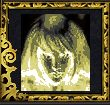

Les Terres de Kirin Tor
Kerla
Points : 0

Joué par :
[ Information masquée ]
Age : 19
Lieu de naisance : HearthGlen
Sexe : Femme
Race : Humain
Faction : Alliance
Formation : Démoniste
Niveau : 60
Guilde : Songe
Artisanat 1 : Herboriste
Artisanat 2 : Alchimiste
Envoyer un MP
Informations hrp : Joueuse régulière mais limitant ses horaires aux soirées et peu le w-e, cherchant à concilier RP et plaisir de "consoleuse".
Petite soeur IRL adoptée de Nausicaa ;) (facile quand on vit pas loin)
Description : Née à Hearthglen, à vu son père se relever en tant que serviteur du Fléau. Fuyant par la mer cet enfer, celle-ci mourut en chemin.
Recueillit par son oncle, seul survivant de la famille, elle grandit dans les reliefs qui séparent la vallée de Strangleronce et le Westfall, apprenant auprès de son tuteur les arts noirs.
La jugeant suffisament aguerrie, il l'envoya à ses dix huit ans à StormWind apprendre plus encore. Croisant rapidement Magdaléna, elle devint son élève.
Sa vie l'amena à être corsaire sur la Maraude, fier équipage au service de Stormwind sous la houlettes de Sonate Sumbre.